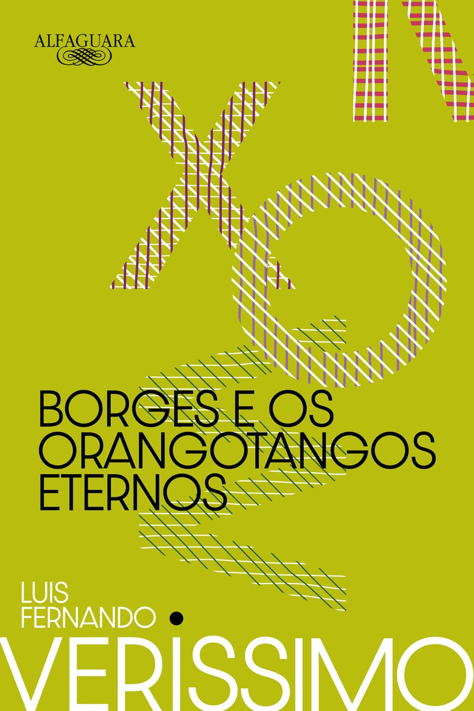
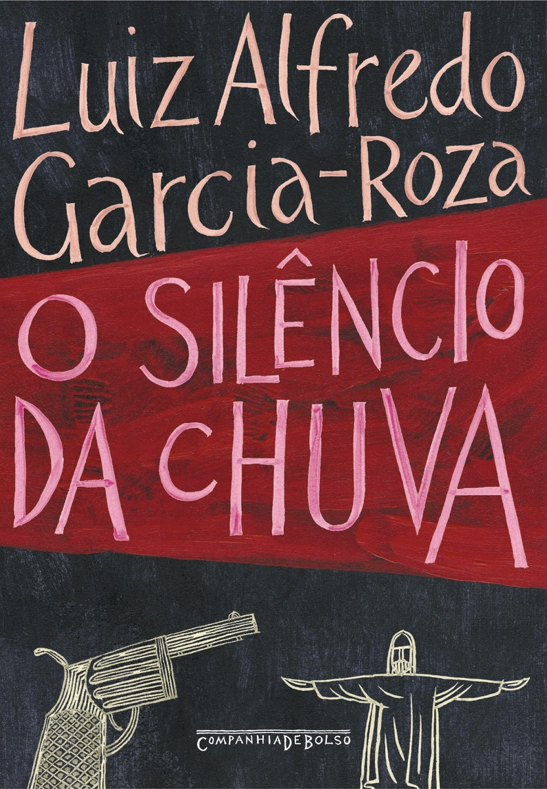
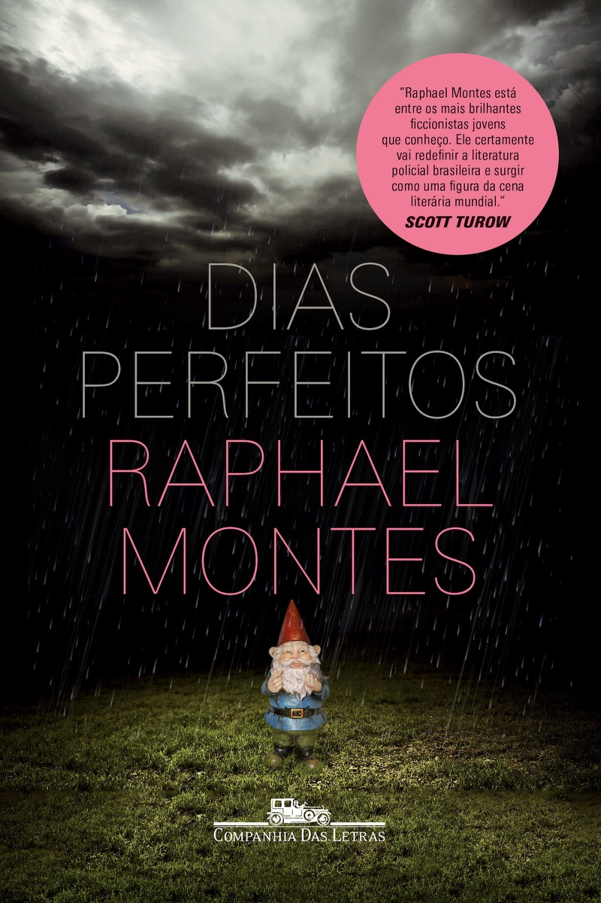

4suspenses nacionais que acabam num fim de semana
todos com menos de 280 páginas




Nada de tijolo de 600 páginas.
Começa sexta à noite, termina domingo antes do jantar.
4 suspenses nacionais
Um cinquentão que vive entre livros vai a um congresso sobre Edgar Allan Poe em Buenos Aires, conhece Jorge Luis Borges e acaba no meio de um crime.
4 suspenses nacionais
Um executivo aparece morto ao volante do próprio carro, no centro do Rio. Ninguém viu nada. O inspetor Espinosa começa a puxar o fio.
4 suspenses nacionais
Victoria tinha quatro anos quando a família foi assassinada. Vinte anos depois, o assassino volta.
Jabuti 2020 de romance
de entretenimento.
4 suspenses nacionais
Amor obsessivo e paranoico, do mesmo autor que criou Bom dia, Verônica. Sombrio e claustrofóbico.
4 suspenses nacionais
Manda pra quem diz que não tem tempo de ler.
4 suspenses nacionais
Qual você começa na sexta?
Responde com o número.
Salva pra quando o fim de semana chegar.